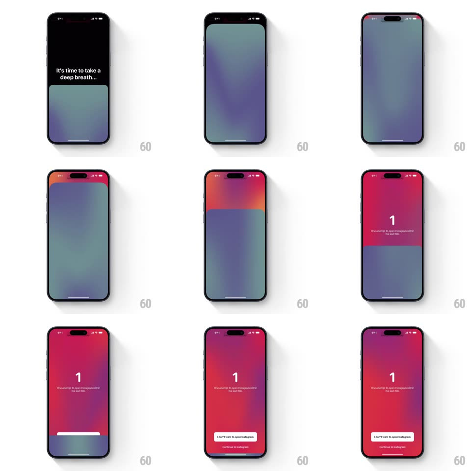

Media
Frame-by-frame

Rebuild this interaction 1:1: one sec's mindful app block - "It's time to take a deep breath..." on black, then a soft gradient slowly expands from the bottom edge until it fills the screen (shifting teal -> purple -> red-pink), a big attempt counter appears, and the dismiss/continue buttons stagger in at the bottom.

Rebuild this interaction 1:1: one sec's mindful app block - "It's time to take a deep breath..." on black, then a soft gradient slowly expands from the bottom edge until it fills the screen (shifting teal -> purple -> red-pink), a big attempt counter appears, and the dismiss/continue buttons stagger in at the bottom.
## Integration
Integration: stack-agnostic spec - springs given as stiffness/damping, timed motions as duration + curve; map every value to your framework and animation library of choice.
## Scene
Black screen with the breath prompt. The gradient rises like water filling the display (blurred teal/purple blobs). Final state: warm red-pink gradient, large white "1" center ("One attempt to open Instagram within the last 24h." below), a white pill "I don't want to open Instagram" and a small "Continue to Instagram" link at the bottom.
## Motion spec
Pattern: slow gradient flood + staged content reveal.
- The prompt fades in on black (400ms) and holds ~1.5s.
- The gradient begins at the bottom edge and expands upward slowly (~5s to fill, ease-in-out), its internal blobs drifting and hue-shifting from cool teal to warm red as it rises - matching the breath pace.
- Once full, the counter "1" scales in (0.8 -> 1, spring ~320/20, ~400ms) with the explainer line fading in beneath it (250ms).
- The white pill rises 20px + fades in (300ms), then "Continue to Instagram" fades in below it (200ms later, intentionally lower-key).
- Tapping the pill dismisses: gradient drains back down (~400ms reverse). Tapping Continue requires the full animation to have played first.
## Calibration
- The flood is slow on purpose - never accelerate it; it is the friction.
- The gradient is blurred and multi-stop with visible blob structure, not a flat vertical ramp.
## Reduced motion
The gradient fades in fully-formed over 1s; the rest of the sequence is unchanged.
## Don't miss
- The counter and its "last 24h" caption are shame-framing - keep them small and centered under the numeral.
- The escape ("Continue to Instagram") is visually demoted versus the dismiss pill.